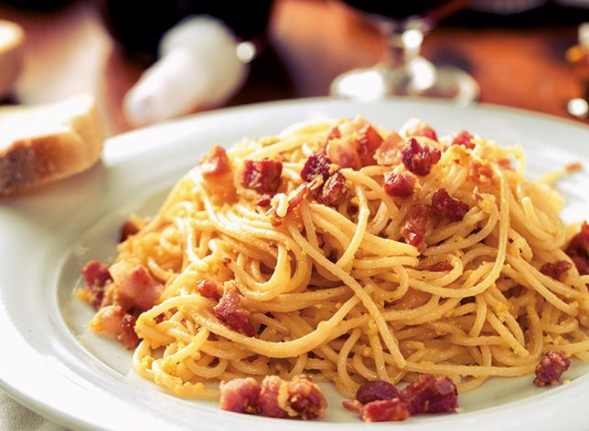

Spaghetti alla carbonara
Ingredienti
Di seguito riportiamo gli ingredienti per preparare il nostro piatto:
- Spaghetti 350g
- Guanciale 150g
- Pecorino 100g
- Pepe
- Uova 4 tuorli + 1 intero
Preparazione
- Mettere sul fuoco una pentola contenente acqua
- Soffriggere il guanciale tagliato a dadini
- Sbattere le uova in una ciotola, quindi unire pecorino e pepe
- Scolare la pasta e saltarla in padella
- Versare la salsa sulla pasta, saltandola per qualche secondo
- Servire il piatto